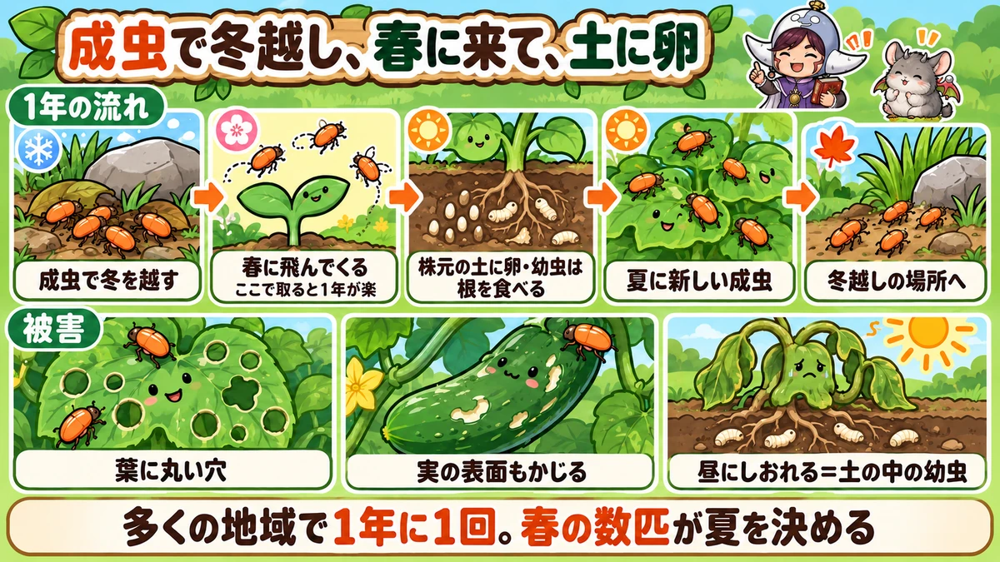
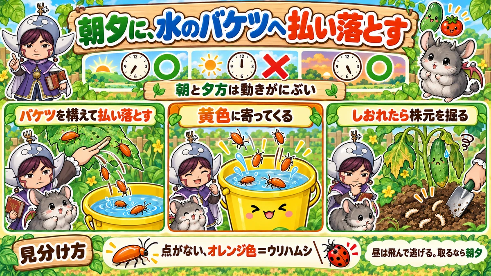
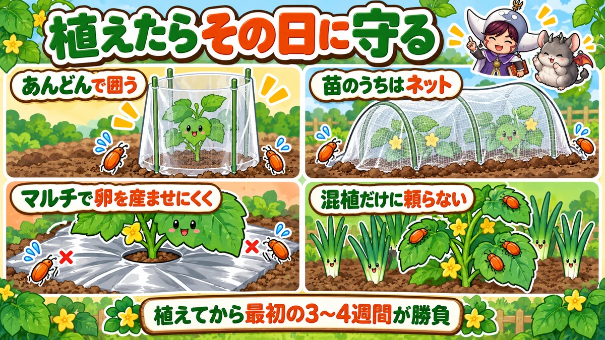

ウリハムシ対策の決定版｜きゅうりの葉の丸い穴、根を食べる幼虫、春に叩くと1年が楽になる理由
📖 この記事の目次
この記事で分かること
- ウリハムシは、オレンジ色の小さな甲虫です。きゅうり、かぼちゃ、すいか、メロン、ズッキーニなど、うりの仲間の葉を食べます。
- 葉に、円を描くように丸くかじった穴があくのが目印です。花や実の表面もかじります。
- 成虫の姿で冬を越し、春の4月下旬〜5月ごろから飛んできます。株元の土に卵を産み、生まれた幼虫は土の中で根を食べます。
- 幼虫に根を食べられると、昼にしおれて夕方に戻る、株元がぐらぐらする、ひどいと枯れる、という被害が出ます。
- 多くの地域では、1年に1回だけ世代をくり返します。だから、春に飛んでくる成虫を減らせば、その年の夏の数も、次の年の数も減っていきます。
- 苗のうちは、あんどんや防虫ネットで守ります。成虫は、動きのにぶい朝夕に、水を入れた容器へ払い落として取ります。
- シルバーマルチや黄色いわなは助けになりますが、それだけで防ぎきれるものではありません。
きゅうりの苗を植えたら、翌日には葉に丸い穴がいくつもあいていた。かぼちゃの小さな苗の葉が、あっという間に網のようになった。夏には、きゅうりの実の表面に、かじったような傷がついている。うりの仲間を育てたことのある方なら、オレンジ色の小さな虫、ウリハムシに出会ったことがあると思います。
ウリハムシは、葉を食べる成虫だけでなく、土の中で根を食べる幼虫も困りものです。しかも、気づいたときには苗の葉がぼろぼろ、ということが多く、植え直しになることもあります。この記事では、ウリハムシの1年の暮らし方から、被害の見分け方、苗の守り方、成虫の取り方、幼虫の被害への手当て、効いた方法と効かなかった方法、プランターでの注意まで、順番に書いていきます。
早見：ウリハムシ対策の基本
見た目
- オレンジ色の、つやのある小さな甲虫。体長は1cmに満たない
- 人が近づくと、ぱっと飛んで逃げる
- 幼虫は、土の中にいる白っぽい細長いうじ虫のような姿
被害のしるし
- 葉に、円を描くように丸くかじった穴
- 苗の葉が網のようになる
- 花や、実の表面がかじられる
- 昼にしおれて夕方に戻る、株元がぐらぐらする（土の中の幼虫）
1年の流れ（多くの地域の目安）
- 冬：成虫が草むらや石・板の下で冬を越す
- 4月下旬〜5月：成虫が活動を始め、うりの仲間に飛んでくる
- 6月〜7月：株元の土に卵を産む（7月中旬ごろが多い）。幼虫が根を食べる
- 7月下旬〜8月：新しい成虫が出てくる（8月上中旬に多い）
- 9月下旬ごろ：成虫が冬越しの場所へ移る
やること
- 苗を植えたら、あんどんや防虫ネットで守る
- 朝夕に、水を入れた容器へ払い落として取る。春の成虫を特に念入りに
- マルチを張って、株元の土に卵を産ませにくくする
- しおれる株は、株元を掘って幼虫を確かめる
- 春先は、大根などアブラナの仲間の葉にも来ていないか見る

ウリハムシという虫
オレンジ色の甲虫
ウリハムシは、体長が1cmに満たない、オレンジ色のつやのある甲虫です。かたい前の羽の下に、飛ぶための羽を持っていて、人が近づくと、ぱっと飛んで逃げます。動きがすばやく、手で捕まえるのはなかなかむずかしい虫です。
うりの仲間が大好物
ウリハムシは、名前のとおり、うりの仲間の葉を好んで食べます。
- きゅうり
- かぼちゃ、ズッキーニ
- すいか、メロン
- ゴーヤ、へちま、ひょうたんなど
においでうりの仲間をかぎ分けるのか、ベランダでたった1株のきゅうりを育てていても、ちゃんと飛んできます。
春先、まだうりの仲間が畑にないときには、大根などアブラナの仲間の葉を食べていることもあります。
葉を丸くかじる
ウリハムシは、葉の上で、自分の体を中心にして円を描くように葉をかじり、丸い溝をつけてから、その内側を食べることがあります。そのため、葉に、きれいな丸い穴や、丸い食べ跡が残ります。丸い穴があいていたら、ウリハムシのしわざと考えてよいでしょう。
被害の見分け方
葉の被害
- 植えたばかりの苗の葉に、丸い穴がいくつもあく
- ひどくなると、葉が網のようになって、光合成ができなくなる
- 苗のうちに葉を食べつくされると、育たなくなり、植え直しが必要になることもある
株が大きく育ってからは、多少葉を食べられても、すぐに株が弱ることは少なくなります。いちばん守りたいのは、植えたばかりの苗のころです。
花と実の被害
ウリハムシは、葉だけでなく、花や、実の表面もかじります。きゅうりの実の表面に、虫がはったような、かじった傷がついていたら、ウリハムシのしわざのことがあります。食べるのに問題はありませんが、見た目が悪くなります。
土の中の幼虫の被害
ウリハムシの成虫は、株元に近い地面に卵を産みます。生まれた幼虫は、土の中で、はじめは細い根を、大きくなると太い根や、株元の茎の中にまで入りこんで食べます。
- 晴れた日の昼にしおれて、夕方には戻る
- 株元を押すと、ぐらぐらする
- 株元の茎に、穴や、食べられて茶色くなった跡がある
- ひどくなると、株が枯れる
プランターや袋で育てているうりの仲間で、急にしおれて枯れ上がってきたら、株元の土を掘って、白っぽい細長い幼虫がいないか確かめてください。
ほかの虫との見分け方
- ウリハムシ：オレンジ色の甲虫。葉に丸い穴
- ウリハムシモドキ：ウリハムシに似た名前だが別の虫。ほうれん草などにつく
- アブラムシ：葉の裏に小さな虫が群れ、葉が縮れる
- ヨトウムシなどのいも虫：葉に大きな穴、ふんが落ちている

1年の流れと、春に叩く理由
成虫で冬を越す
ウリハムシは、成虫の姿で冬を越します。畑のまわりの草むらや、石や板の下、落ち葉の下などに、かたまって潜んでいます。
春に飛んできて、卵を産む
春、暖かくなる4月下旬から5月ごろに活動を始め、うりの仲間の苗に飛んできます。葉を食べながら、6月ごろから株元の土に卵を産み、7月中旬ごろが産卵のいちばん多い時期になります。
春は、大根の葉にも注意
4月ごろ、まだうりの仲間を植えていない畑では、ウリハムシが大根などアブラナの仲間の葉を食べていることがあります。春の大根の葉に丸い穴があいていたり、オレンジ色の虫がいたりしたら、そこで取っておくと、あとでうりの苗に移ってくる数を減らせます。
夏に新しい成虫
土の中で育った幼虫は、さなぎになって、7月下旬ごろから新しい成虫になって出てきます。8月上中旬ごろが、新しい成虫のいちばん多い時期です。夏のきゅうりやかぼちゃの葉がぼろぼろになるのは、この新しい成虫が増えるためです。
秋になると、成虫は冬越しの場所へ移っていきます。暖かい地域では、秋にもう1回、新しい成虫が出てくることもあります。
雨が少なく暑い年は増えやすい
梅雨の時期に雨が少なく、30℃を超える暑い日が続いた年に、6月下旬から7月にかけてウリハムシが一気に増えた、という例もあります。春に少なかったからと油断せず、夏の初めまで見回りを続けます。
なぜ、春に叩くと楽になるのか
多くの地域では、ウリハムシは1年に1回だけ世代をくり返します。夏に増える成虫は、すべて、春に飛んできた成虫が産んだ卵から生まれたものです。
だから、春に飛んできた成虫を早めに取って数を減らせば、その年に産まれる卵が減り、夏の成虫も減ります。夏の成虫が減れば、冬を越す数も減り、次の年の春に飛んでくる数も減ります。春の数匹を取ることが、その年と次の年の被害を、まとめて減らすことにつながるのです。
苗を守る
植えたらすぐ、あんどんで囲う
苗を植えたら、苗のまわりを、肥料の空き袋や、底を抜いたビニール袋、筒状にしたビニールなどで囲い、上を開けた「あんどん」を作ります。
- 支柱を3〜4本立てて、そのまわりに袋やビニールを巻きつける
- 高さは、苗の高さより十分高く
- 上は開けておき、風と光を通す
ウリハムシは、横に飛んで移動するのは得意でも、上から真下に降りていくのはあまり得意でない、と言われています。あんどんで囲うと、苗に近づきにくくなります。寒さや風よけにもなります。苗が育って、あんどんからはみ出すくらいになったら外します。
植えつけの前に準備しておくこと
- うねを作ってマルチを張っておく
- あんどん用の支柱と袋、または防虫ネットとトンネル用の支柱を用意する
- 畑のまわりの雑草を刈っておく
- 水を張るバケツを畑に置いておく
苗を植えたその日のうちに守りを整えられるよう、準備をすませてから苗を買います。
あんどんの作り方
1．苗を植えたら、苗のまわりに、50〜60cmほどの細い支柱を3〜4本、苗を囲むように立てます。
2．肥料の空き袋や、大きめのビニール袋の底を切り抜いて、筒の形にします。
3．筒を、支柱の外側からかぶせるように巻きつけ、すそを少し土に埋めます。
4．上の口は開けたままにして、風と光を通します。
5．洗濯ばさみやひもで、筒を支柱に留めます。
晴れた日の昼は、あんどんの中が暑くなりすぎることがあるので、苗がしおれていないか見ておきます。苗の先があんどんの口から出るくらいに育ったら、外します。
防虫ネットや寒冷紗で覆う
苗が小さいうちは、防虫ネットや寒冷紗のトンネルで苗を覆うと、成虫が飛んでくるのを防げます。すそは土で埋めて、すき間をなくします。
ただし、うりの仲間の多くは、花が咲くと虫に花粉を運んでもらう必要があります（きゅうりの品種の中には、受粉しなくても実がつくものもあります）。株が大きくなって花が咲きはじめたら、ネットを外すか、人の手で受粉させます。
苗の選び方と植える前の確認
- 葉の色が濃く、厚みがあり、本葉が3〜4枚の苗を選ぶ
- 節と節の間が間のびしていない、がっしりした苗を選ぶ
- 買うときに、葉の裏に虫や卵がついていないかを見る
- 苗を買ったら、なるべく早く植える。植える場所の準備をすませてから買う
がっしりした苗は、多少葉を食べられても持ち直しやすくなります。
マルチを張る
株元にマルチを張っておくと、成虫が卵を産める土の部分が減ります。卵が減れば、幼虫の被害も、夏の新しい成虫も減ります。
銀色の面があるシルバーマルチには、きらきらした反射でウリハムシを寄せにくくする効果も、多少期待できます。ただし、つるが伸びてマルチをおおってしまうと、反射の効果はなくなります。苗のうちの守りと考えてください。
成虫を取る
朝夕は動きがにぶい
ウリハムシは、気温の高い昼間は動きがすばやく、すぐに飛んで逃げてしまいます。朝や夕方の涼しい時間は動きがにぶく、取りやすくなります。
水を入れたバケツへ払い落とす
1．バケツや容器に水を張って、持っていきます。
2．葉の上のウリハムシを見つけたら、容器を葉の下に構えます。
3．葉ごと容器のふちに近づけ、手で払い落とします。
4．水に落ちたウリハムシは、飛んで逃げにくくなります。
手で捕まえようとすると逃げられますが、朝夕なら、払い落とすだけで、かなりの数を取ることができます。虫取り網を使う人もいます。取ったものは、ペットボトルや袋に入れて処分します。
見回りの時間と手順
動きのにぶい時間は、朝は7時ごろまで、夕方は5時以降が目安です。
1．水を張ったバケツを持って畑に行く
2．苗のあんどんの中、葉の表、花のまわりを見る
3．見つけたら、バケツを葉の下に構えて払い落とす
4．葉に新しい丸い穴が増えていないか確かめる。増えていれば、まだ近くにいる
5．しおれている株がないか見る。あれば株元の土を確かめる
春の成虫が飛んでくる4月下旬から5月は、できれば毎日、少なくとも2〜3日に1回は見回ります。
黄色いわな
ウリハムシは、黄色に寄ってくる性質があります。黄色いバケツに水を張り、水に少し洗剤を入れて置いておくと、飛んできたウリハムシが落ちて、そのまま出られなくなります。1日に何匹か取れた、という例もあります。全部を取りきることはできませんが、見回りの助けになります。
効いた方法、効かなかった方法
試した人の声
家庭菜園で、薬を使わずにウリハムシ対策をいろいろ試した人の中には、次のような結果を話している人もいます。
- ねぎの混植：ウリハムシには、ほとんど効果を感じなかった
- 大葉（しそ）の混植：効果を感じなかった
- シルバーマルチや銀色のテープ：多少効果はあるが、つるがマルチをおおうと効かなくなる
- 木酢液をうすめて、ウリハムシや葉にかける：効果を感じた
- 黄色いバケツのわな：毎日何匹かずつ取れた
これは1人の畑での結果で、場所や年によって違うこともあります。ただ、「混植だけで防げる」と考えず、あんどん、ネット、取る、を組み合わせるのが確実です。
天敵もいる
ウリハムシにも、鳥やカマキリ、クモなどの天敵がいます。強い薬をあちこちにかけると、こうした天敵も減ってしまいます。手で取る、ネットで守る、を中心にすると、天敵もはたらきやすい畑になります。
もみ殻くん炭を株元にまく
もみ殻くん炭を株元にまいておくと、ウリハムシが寄りにくくなった、という声もあります。もともと土をよくする資材なので、まいておいて損はありませんが、効き目は一時的と考え、ほかの方法と組み合わせます。
畑のまわりの雑草を整理する
ウリハムシは、畑のまわりの草むらで冬を越し、春にそこから飛んできます。うねのまわりや、畑のふちの雑草を整理しておくと、飛んでくる数を減らすことにつながります。春先の雑草取りは、ウリハムシ対策の準備でもあります。
品種によって被害が違う
同じ畑に、同じ時期に植えたきゅうりでも、品種によって、ウリハムシの被害が大きく違うことがあります。葉がやわらかい品種などに、ウリハムシが集まりやすいようです。
集まりやすい株があれば、そこを重点的に見回ると、少ない手間で多く取れます。毎年被害の大きい品種があれば、次の年は別の品種を選ぶことも考えます。

幼虫の被害への手当て
しおれた株は掘って確かめる
晴れた日の昼にしおれて、夕方に戻る株、株元がぐらぐらする株は、株元の土を少し掘って、根と株元の茎を確かめます。白っぽい細長い幼虫がいたら取り除きます。
幼虫の見分け方
ウリハムシの幼虫は、白っぽい、細長いうじ虫のような姿で、頭のあたりが少し色づいています。株元の茎の中や、根のまわりの土にいます。
同じく土の中にいるコガネムシの幼虫は、白くて太く、体を半円のように丸めているので、形で見分けられます。どちらも根を食べるので、見つけたら取り除きます。
ひどい場合は植え直す食べられた苗の手当て
苗の葉が食べられても、株の先の新しい芽（成長点）が無事なら、新しい葉が出てきて持ち直すことがあります。
- ウリハムシを取り、あんどんやネットで、これ以上食べられないようにする
- 新しく出てくる葉を守ることを優先する
- 植えたばかりで根づいていない苗に、あわてて肥料を足さない
- 成長点まで食べられてしまった苗や、葉がほとんど残っていない苗は、植え直しを考える
根や株元の茎が大きく食べられてしまった株は、元に戻りにくいので、新しい苗に植え直したほうが早いこともあります。植え直すときは、株元の土の中の幼虫を取ってから、マルチを張って植えます。
プランターや袋で特に注意
プランターや袋で育てるうりの仲間は、土の量が少ないぶん、幼虫に根を食べられると、すぐにしおれて枯れてしまいます。株元の土の表面を不織布などで覆っておくと、卵を産みにくくなります。しおれはじめたら、早めに土を掘って確かめます。
野菜ごとの守る期間の目安
- きゅうり：4月下旬〜5月に苗を植えてから、つるが伸びて花が咲きはじめるまで、あんどんかネット
- かぼちゃ、ズッキーニ：苗を植えてから、葉が大きく広がるまで。直まきは芽が出る前からネット
- すいか、メロン：苗を植えてから、つるが伸びはじめるまで。メロンは葉が少しでも減ると響くので、より念入りに
- 夏に植えるきゅうり：植えたらすぐネット。夏の新しい成虫の時期と重なる
どの野菜も、「植えてから最初の3〜4週間」がいちばん守りたい期間です。
直まきの守り方
かぼちゃやきゅうりのタネを畑に直接まく場合は、芽が出たばかりの小さな双葉を食べつくされると、育たなくなってしまいます。
- タネをまいたら、すぐに不織布や防虫ネットで覆っておく
- 芽が出て本葉が育つまで、覆いをかけたままにする
- 覆いの中にウリハムシが入っていないか、朝夕に確かめる
- 心配な場合は、ポットで苗を育ててから植える
夏から植えるきゅうりの守り方
春に植えたきゅうりが疲れてくる夏に、もう一度きゅうりの苗を植えて、秋まで収穫を続ける育て方（リレー栽培）があります。このとき注意したいのが、夏に増える新しい成虫です。
- 夏に植える苗は、春以上に念入りに守る。植えたらすぐ防虫ネットのトンネルで覆う
- 葉がやわらかい若い苗のうちに食べられると、育ちが大きく遅れる
- はじめのきゅうりの株にウリハムシが多い場合は、近くに植えずに、少し離れた場所に植える
- 朝夕の見回りを、春と同じように続ける
記録をつける
ウリハムシを初めて見た日、多かった時期、被害の大きかった品種、効いたと感じた方法を、簡単にメモしておきます。次の年、苗を植える前に読み返せば、いつから守りを固めればよいか、どの品種を選べばよいかが分かります。
- 初めて見た日（春の成虫）
- いちばん多かった時期（夏の新しい成虫）
- 被害の大きかった品種と、少なかった品種
- 試した方法と、効いたと感じたかどうか
プランターでの守り方
ベランダのプランターで育てるうりの仲間は、株の数が少ないぶん、1株の被害が目立ちます。
- 苗を植えたら、プランターごと覆えるネットをかける
- 株元の土を、不織布やマルチ、敷きわらで覆う
- 朝夕に見回り、葉の表と花のまわりを見る
- 急にしおれたら、株元の土を掘って幼虫を確かめる
- 使い終わった土は、ふるって幼虫やさなぎを取ってから使い回す
片づけのときにやること
うりの仲間の収穫が終わったら、株を抜くときに、株元の土を少し掘って、幼虫やさなぎがいないか確かめます。見つけたら取り除きます。
- 抜いた株は、畑に置かずに片づける
- 株元の土を移植ごてで浅く探る
- まわりの草むらや、石・板の下など、冬越しの場所になりそうなところを片づける
秋のうちにこうした片づけをしておくと、次の年の春に飛んでくる数を減らせます。
ネットやあんどんを外したあと
株が大きくなってネットやあんどんを外したあとも、ウリハムシは飛んできます。
- 朝夕の見回りを続ける。夏の新しい成虫が増える7月下旬からは特に
- 株が大きく茂っていれば、多少葉を食べられても気にしすぎない
- 実の表面がかじられないよう、収穫のときにまわりを見る
- 株元の土が見えている場所に、敷きわらやマルチを足して、卵を産ませにくくする
手間をかける順番
家庭菜園で、すべての対策を毎回やるのは大変です。手間をかける順番を決めておくと、続けやすくなります。
1．苗を植えたら、すぐにあんどんかネット（いちばん効く）
2．春の成虫を、朝夕に取る（その年と次の年が楽になる）
3．マルチで、株元の土に卵を産ませにくくする
4．しおれた株は、株元を掘って確かめる
5．黄色いわなや、くん炭などは、余裕があれば
季節ごとにやること（一般的な地域の目安）
- 2〜3月：畑のまわりの草むら、石や板の下など、冬越しの場所を片づけておく
- 4〜5月：うりの仲間の苗を植えたら、すぐにあんどんやネット。マルチを張る。飛んできた成虫を朝夕に取る（いちばん大事な時期）
- 6〜7月：株元の土に卵が産まれる時期。しおれる株は掘って確かめる。成虫の見回りを続ける
- 7月下旬〜8月：新しい成虫が増える時期。朝夕の見回りと、黄色いわな。実の表面のかじり跡にも注意
- 9〜10月：うりの仲間を片づける。株元の土の幼虫やさなぎを探す。冬越しの場所になる草むらを整理
野菜ごとの注意
きゅうり
植えたばかりの苗が狙われやすい野菜です。あんどんで囲い、朝夕に見回ります。夏には実の表面もかじられるので、収穫のときに見回りを兼ねます。
地這いきゅうり
支柱を立てずに、つるを地面にはわせて育てる地這いきゅうりは、夏に植えて育てることが多く、葉がやわらかい若い株のうちに、夏の新しい成虫に食べられやすくなります。植えたらすぐネットで覆い、朝夕の見回りを欠かさないようにします。
かぼちゃ、ズッキーニ
タネを畑に直接まいて育てると、芽が出たばかりの小さな苗のうちに葉を食べられて、育たなくなることがあります。ポットで苗を育ててから植えるか、直まきの場合はネットで覆っておきます。
すいか、メロン
苗のうちはあんどんやネットで守ります。プランターや袋で育てる場合は、土の中の幼虫にも注意します。
メロンの葉の被害
メロンの葉は、ウリハムシにかじられると、表面の半分ほどを食べられて薄皮が1枚残り、そこがすぐに枯れて穴になることがあります。メロンは、葉を多く失うと実の育ちに大きく響くので、苗のうちから、ほかのうりの仲間より念入りに守ります。
へちま、ひょうたん
緑のカーテンなどで育てるへちまやひょうたんも、うりの仲間なので、ウリハムシが集まります。苗のうちはあんどんで守り、葉が茂ってからは、朝夕に見回って取ります。
ゴーヤ
ゴーヤも、ウリハムシに葉を食べられることがありますが、株が大きく茂るので、大きな被害になりにくいこともあります。苗のうちは守ります。
説明が分かれるところ
コンパニオンプランツは効くか
ねぎなどの混植でウリハムシを遠ざけられる、という説明がある一方、試した人の中には、ほとんど効果を感じなかったという声もあります。混植には、病気を減らすなど別の目的もあるので、ウリハムシ対策としては、あんどんやネット、取ることを中心にします。
ネットはいつまでかけるか
苗のうちはネットで守り、花が咲いたら外す、という考え方が一般的です。受粉しなくても実がつくきゅうりの品種なら、かけたままでも実がつきますが、株が大きくなるとネットに収まらなくなります。
春に何匹取ればいいか
数を決める必要はありません。春の見回りのたびに、見つけたものを取る。それを続けるだけで、夏の数が減っていきます。
よくある失敗
苗を植えて、何もかけずにいた
植えた翌日には葉を食べられることがあります。植えたらすぐにあんどんやネットを。
昼に捕まえようとして、逃げられた
朝夕の動きのにぶい時間に、容器へ払い落とします。
春の数匹を見逃した
夏に増える成虫は、春の成虫が産んだ卵から生まれます。春のうちに取っておきます。
しおれた株に、水をやり続けた
土の中の幼虫に根を食べられていると、水をやっても戻りません。株元を掘って確かめます。
かぼちゃを直まきして、芽を食べられた
直まきの芽は小さく、食べつくされやすいので、ネットで覆うか、ポットで苗を育ててから植えます。
よくある質問
きゅうりの葉に丸い穴があるのに、虫が見当たりません
ウリハムシは、人が近づくとすぐに飛んで逃げるので、昼に見回っても姿が見えないことがあります。朝7時ごろまでか、夕方5時以降に、もう一度見に行ってみてください。葉に新しい穴が増えていれば、近くにいます。
しおれたきゅうりの株元に、穴があいていました
株元の茎の穴は、ウリハムシの幼虫が中に入りこんだ跡かもしれません。株元の土を掘って、白っぽい細長い幼虫がいないか確かめます。茎が大きく傷んでいる場合は、元に戻りにくいので、新しい苗に植え直すことも考えます。
テントウムシとまちがえて、そのままにしていました
ウリハムシは、全身が無地のオレンジ色で、背中に黒い点はありません。テントウムシは、体が丸く、背中に黒い点や模様があるものが多いです。オレンジ色で点のない、細長めの甲虫は、ウリハムシと考えてください。
春に1匹も見なかったのに、夏に急に増えました
春の成虫が少なくても、畑のまわりから夏に新しい成虫が飛んでくることがあります。また、春に気づかないうちに飛んできて、株元に卵を産んでいたのかもしれません。春の見回りで葉に丸い穴がないか、株元の土に幼虫がいないかを、次の年は念入りに見てください。夏の新しい成虫は、朝夕に払い落として数を減らします。
かじられたきゅうりは食べられますか
表面の傷だけなら、食べて問題ありません。傷の部分が気になる場合は、むいてください。
ベランダのプランターにも来ますか
来ます。においでうりの仲間を見つけて飛んでくるので、ベランダの1株にも来ることがあります。苗のうちは、プランターごとネットで覆っておくと安心です。
ウリハムシは人をかみますか
ウリハムシは、人をかんだり、刺したりすることはありません。手で払い落としても大丈夫です。
近所の畑から飛んでくるようです
ウリハムシは飛んで移動するので、まわりの畑や草むらからやってきます。自分の畑だけでは防ぎきれないこともありますが、苗のうちの守りと、来たものを取ることを続ければ、被害は減らせます。
黄色い粘着シートは使えますか
黄色い粘着シートにも、ウリハムシは寄ってきます。ただし、天敵になる虫や、役に立つ虫もくっついてしまうことがあります。使う場合は、苗のまわりに少しだけ、短い期間に限って使うのがよいでしょう。
薬を使わずに、全部防ぐことはできますか
ウリハムシは飛んでくるので、全部を防ぐことはできません。目標は、苗のうちの葉を守ること、春の成虫を減らして夏に増やさないこと、です。株が大きく育てば、多少葉を食べられても、収穫は続けられます。
かぼちゃの雌花の受粉に、ネットは邪魔になりませんか
かぼちゃは、虫に花粉を運んでもらって実がつきます。花が咲く時期にネットをかけたままだと、実がつきにくくなります。花が咲きはじめたらネットを外すか、朝のうちに雄花をつんで、雌花に花粉をつける人工受粉をします。
ウリハムシが多い畑では、うりの仲間を育てないほうがいいですか
やめる必要はありません。苗のうちの守りをしっかりして、春の成虫を取ることを続ければ、うりの仲間は育てられます。毎年多い場合は、植える数を少し減らして見回りに手をかける、守りやすいように1か所にまとめて植える、といった工夫も役に立ちます。
毎年たくさん来ます
畑のまわりに、冬越しの場所になる草むらや、石・板の積んである場所があるのかもしれません。冬の間にそうした場所を片づけ、春の成虫を念入りに取ることを、数年続けてみてください。
学ぶ：ウリハムシのしくみ🔬
なぜ、葉を丸くかじるのか
うりの仲間の葉には、虫に食べられるのを防ぐための、苦い成分や、ねばねばした汁を出すしくみがあります。ウリハムシは、葉を円を描くようにかじって溝をつけ、汁の流れを断ってから、その内側を食べる、と考えられています。丸い食べ跡は、うりの仲間の守りをくぐり抜けるための、ウリハムシの食べ方なのです。
なぜ、1年に1回なのか
ウリハムシは、春に冬越しから目覚めた成虫が卵を産み、その子どもが夏に成虫になって、そのまま冬を越します。多くの地域では、夏に生まれた成虫が、その年のうちにもう1回卵を産むことはありません。そのため、1年に1回しか世代が回りません。何回も世代をくり返す虫と比べて、数が増えるペースがゆっくりなので、春に数を減らす効果が大きく表れます。
なぜ、苗の葉が狙われやすいのか
植えたばかりの苗の葉は、やわらかく、食べやすい葉です。また、苗のうちは葉の枚数が少ないので、同じ数の穴でも、株全体に対する被害の割合が大きくなります。株が大きく育つと、葉の枚数が増え、多少食べられても光合成の量はまかなえるようになります。苗のうちの守りが大切なのは、このためです。
なぜ、株元に卵を産むのか
ウリハムシの幼虫は、うりの仲間の根を食べて育ちます。株元の近くの土に卵を産めば、生まれた幼虫がすぐに根にたどり着けます。マルチで株元の土をおおうと卵が減るのは、この産む場所をふさぐことになるからです。
なぜ、朝夕は動きがにぶいのか
虫は、まわりの気温によって体の温度が変わる生き物です。気温の低い朝や夕方は、体が十分に温まっていないので、動きがにぶく、すぐには飛び立てません。日が高くなって気温が上がると、体が温まって、すばやく動けるようになります。ウリハムシを取るなら朝夕、と言われるのは、このためです。
なぜ、黄色に寄ってくるのか
多くの虫は、黄色を、花や若い葉の色として見分け、えさのある場所の目印にしていると考えられています。ウリハムシも、黄色いものに引き寄せられます。黄色いわなは、この性質を使ったものです。
まとめ
ここまで読んでくださって、ありがとうございます！苗の葉にあいた丸い穴を見つけたときに、この記事を思い出していただけたらうれしいです。
ウリハムシ対策のポイントを、もう一度まとめておきます。
- ウリハムシは、うりの仲間の葉を丸くかじるオレンジ色の甲虫。花や実の表面もかじる
- 成虫で冬を越し、4月下旬〜5月から飛んでくる。株元の土に卵を産み、幼虫は根を食べる
- 多くの地域で1年に1回。春の成虫を減らせば、その年の夏も、次の年も楽になる
- 苗を植えたらすぐ、あんどんやネットで守る。マルチで卵を産ませにくくする
- 朝夕の動きのにぶい時間に、水を入れた容器へ払い落とす
- 黄色いわなやシルバーマルチは助けになるが、それだけでは防ぎきれない
- 昼にしおれて夕方に戻る株は、株元を掘って幼虫を確かめる
- 混植だけに頼らない。品種によって被害が違うこともある
- 植えてから最初の3〜4週間が、いちばん守りたい期間。直まきは芽が出る前から覆う
- 片づけのときに株元の土を探り、冬越しの場所を整理すると、次の年が楽になる
ウリハムシは、春に手を打つほど、1年が楽になる虫です。苗のうちの守り、春の成虫取り、株元の土の手当て。この3つを毎年続けていけば、畑のウリハムシは少しずつ減っていきます。次にうりの仲間の苗を植えるときは、あんどんの袋と支柱、そして水を入れたバケツを、苗といっしょに用意してみてください🥒
防虫ネット
苗を植えたらすぐトンネルにして、最初の3〜4週間を守ります。花が咲きはじめたら外します。


シルバーマルチ
反射でウリハムシを寄せにくくし、株元の土に卵を産ませにくくします。苗のうちの守りに。
![[商品価格に関しましては、リンクが作成された時点と現時点で情報が変更されている場合がございます。]](https://hbb.afl.rakuten.co.jp/hgb/55e77bb2.a973bab2.55e77bb3.28befe28/?me_id=1223148&item_id=10001699&pc=https%3A%2F%2Fthumbnail.image.rakuten.co.jp%2F%400_mall%2Fideshokai%2Fcabinet%2Fam425.jpg%3F_ex%3D240x240&s=240x240&t=picttext "[商品価格に関しましては、リンクが作成された時点と現時点で情報が変更されている場合がございます。]")
支柱
あんどん作りに。苗のまわりに3〜4本立てて、袋を巻きつけます。
![[商品価格に関しましては、リンクが作成された時点と現時点で情報が変更されている場合がございます。]](https://hbb.afl.rakuten.co.jp/hgb/56d221a0.da732c49.56d221a1.b57a6709/?me_id=1230952&item_id=10017113&pc=https%3A%2F%2Fthumbnail.image.rakuten.co.jp%2F%400_mall%2Fnou-nou%2Fcabinet%2F5010356000109-01.jpg%3F_ex%3D240x240&s=240x240&t=picttext "[商品価格に関しましては、リンクが作成された時点と現時点で情報が変更されている場合がございます。]")
次に読む
記事一覧へ